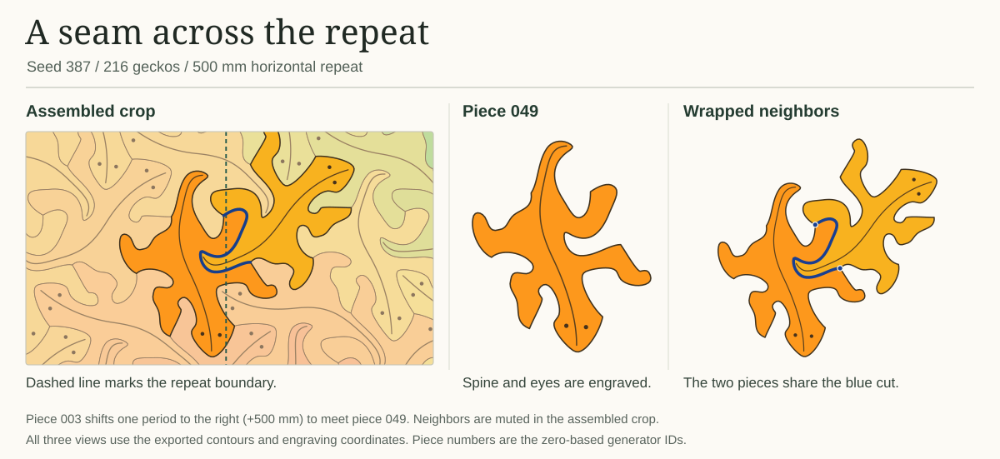
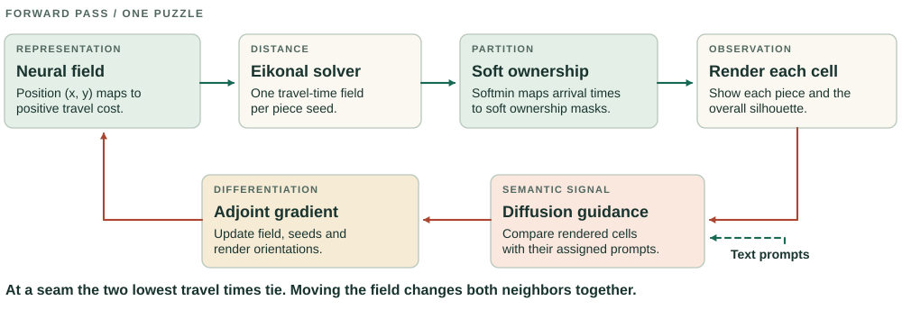
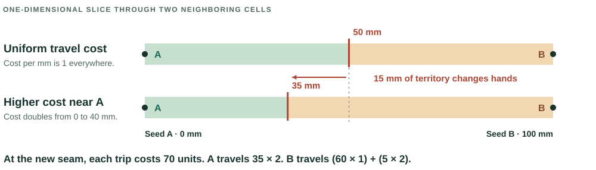
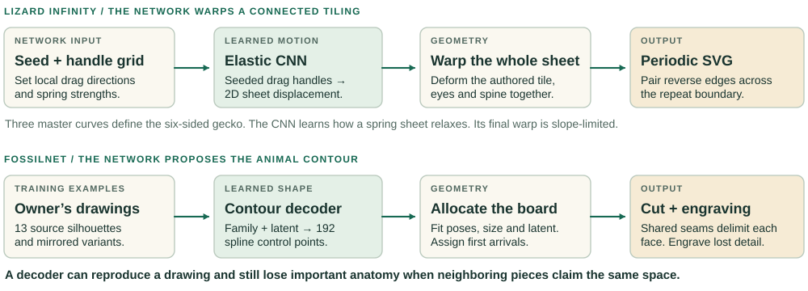
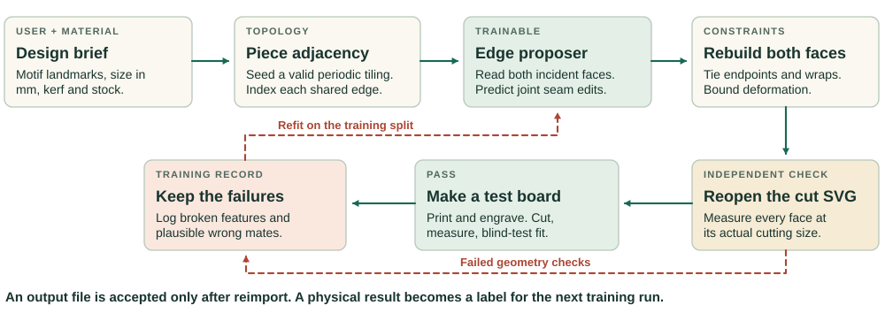
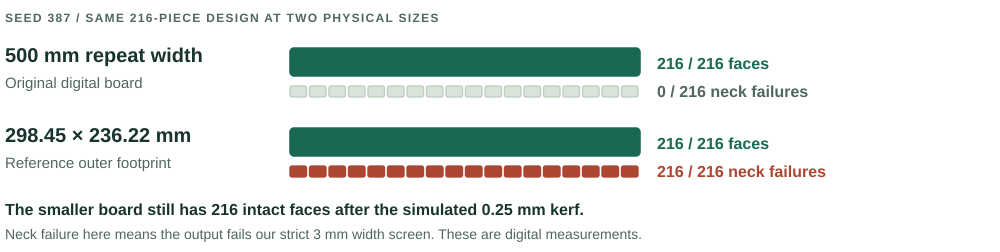

A lizard’s foreleg is also a recess in its neighbor. The design problem is to keep both animals legible as their shared cut moves, all the way across a board that wraps.

Nervous System’s 216 solid-color lizards vary individually and fit in a particular local arrangement. Moving pieces across opposite sides changes the assembled outline.
Can a model preserve the features people recognize, prevent plausible wrong fits and leave enough wood at each ankle, at the intended size?
In Generative Whimsy Jigsaws, a seed represents each piece. Prompts can guide individual silhouettes and the whole board. A frozen diffusion model, DeepFloyd IF, guides each puzzle’s optimization.

Equal travel time defines the common border. The continuous model gives each seed one connected region. A pixel-grid tie can disconnect it. During export a hard minimum assigns each pixel to its fastest seed, then the borders become vectors.
The authors tested 6–20 pieces and laser-cut two 12-piece designs. Optimization took 25–50 minutes on an RTX 4090. A vision-language model rated recognition. The paper reports no 216-piece periodic trial.
Periodic precedent. Generative Escher Meshes optimizes a repeat tile under symmetry constraints. The lizard puzzle also needs individually distinguishable pieces. Aigerman & Groueix, 2024
Both seeds grow through the same space. The dividing line is where their travel costs are equal. Changing one stretch of terrain moves the border for both pieces at once.

Start from a point inside each target motif. Dijkstra’s algorithm finds travel times on an eight-neighbor grid. Gradients follow the winning paths back to a shared cost field. The solver scores resemblance, area and necks. A learned recognizer is optional. Across three matched six-animal boards it lowered mean aligned silhouette overlap from 0.617 to 0.601.
Start from placed silhouettes. A neural field changes the cost of crossing the gaps between them. It learns separately for each board. Every ten steps by default, the solver rebuilds the pieces and measures whether groups can slide apart. On one 32-logo layout, the fixed bay rule scored 4.78 mm of simulated lock margin. Resuming field training raised it to 6.00 mm with equal mean contour retention.
Design consequence. We already have a way to learn where a boundary should go. The proposed graph model would learn edits across boards, using both animals’ landmarks and the target stock size. It should compete against this per-board optimization.
Two existing systems put learning in different places. The lizard network predicts how a sheet deforms. FossilNet predicts a drawing’s outline before a separate stage allocates space on the board.

The teacher is a 32-step elastic simulation. Held-out displacement error was 0.0312 grid units across 256 sheets, versus 0.1290 for raw handles. That score measures motion. Cut-file reimport and material screens answer different questions.
Mean outline overlap reached 99.3% on 3,120 held-out deformations of the source drawings. On archived boards, only about 51–58% of the trilobites’ original contours lie within 2 mm of the cut. Engraving restores some visible detail.
Scope. The fossil route shown uses the decoder imported by fossil_field.py. Formverk’s Dendrite trial placed two fixed fossils inside an ordinary 32-piece partition.
Start with our valid periodic topology. Give the model both sides of each seam, the motif landmarks and the physical scale. Let it predict small changes to shared control points, then score the resulting cut faces.

For each edge, encode both faces’ local silhouettes, toe and snout landmarks, nearby junctions, edge length in mm and kerf. Predict bounded normal displacements along the edge. Use the same controls in reverse for its neighbor and translated copies for wrap seams.
Reward agreement with landmarks on the final colorless silhouettes. Penalize thin wood and wrong neighbors that nearly seat. Use measured breakage and seating outcomes to calibrate those penalties. Reject crossings, missing faces and wrap mismatches after vector export.
Training example. Feed an edge and both neighbors to a graph network. Start with solver-generated edits, then rank candidate edits by post-cut landmark error, width deficit and wrong-fit clearance. Reserve physical outcomes and held-out source families for calibration and evaluation on separate splits.
A successful tile map can still make fragile pieces. We compared two archived exports of the same lizard seed. The smaller export fits the reference product’s outer dimensions by scaling each axis independently.

On the large repeat, 216 pieces share 648 periodic seams. Across 64 seeds, the archive reimported 13,824 faces. At the reference size, all 216 pieces remain closed and distinct, even though all trigger our 3 mm neck test. The 3 mm test erodes each outline inward by 1.5 mm and flags a split or empty core.
On a 183-logo board, the v1 and v2-M runs recorded 68.48% and 77.38% silhouette coverage respectively. At the same bay setting and seed, neighboring pairs passing the 1 mm lock screen fell from 83/506 to 57/505. One matched case shows why both measures belong in training.
Interpretation. The archive measures our geometry. Actual breakage depends on stock and fabrication. The studio’s commercial puzzle has a different cut.
Run the current generator and the proposed model on the same briefs, board sizes, materials and seeds. Keep every first pass, every rejected candidate and the compute budget for each accepted board.
| Comparison | Measurement | What would convince us |
|---|---|---|
| Shared geometry | Polygonize the exported SVG. Count 216 faces, opposite wrap mates, intersections, gaps, overlaps and repeated cuts. | All 216 intended faces and wraps recovered, with no geometric defects beyond the declared rounding tolerance. |
| Recognizable pieces | Show isolated, uncolored silhouettes at matched size. Blind raters to the model. Score motif identification and landmark visibility. | Higher recognition on unseen source drawings, with paired uncertainty intervals. Report engraving-assisted scores separately. |
| Correct local fit | Try intended neighbors and the hardest wrong matches, allowing rotation and wrap translation. Repeat a randomized subset in wood. | Intended matches seat. Fewer wrong matches seat at the same measured kerf. Record the number of attempted joins. |
| Strength and yield | Check the 3 mm minimum in both exports. Cut matched samples from the same stock. Count broken or loose features and complete first-pass boards. | Higher first-pass yield at the target footprint and no increase in physical breakage. Report stock, kerf, failures and retries. |
Split by original drawing family before augmentation. Hold out entire board seeds. Use geometry and size-matched briefs for B versus C. For finite boards, include the per-board field at matched compute. All new training and physical comparisons are proposed.